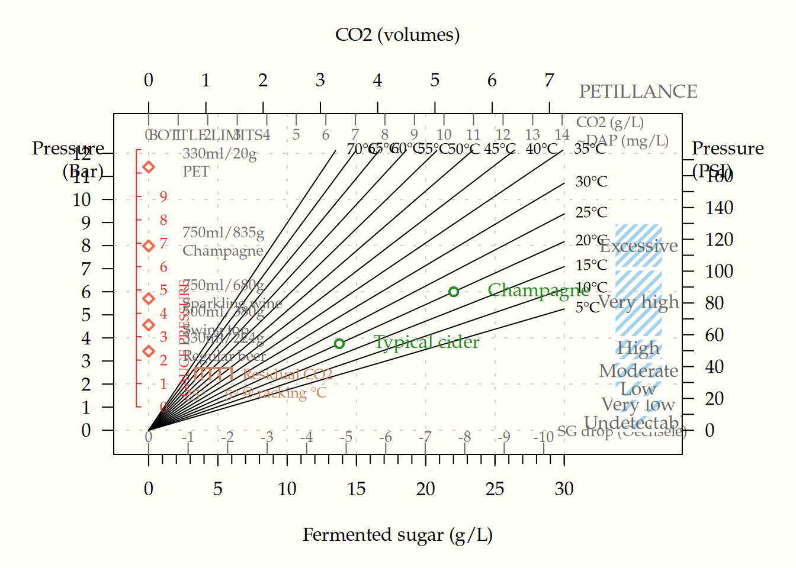
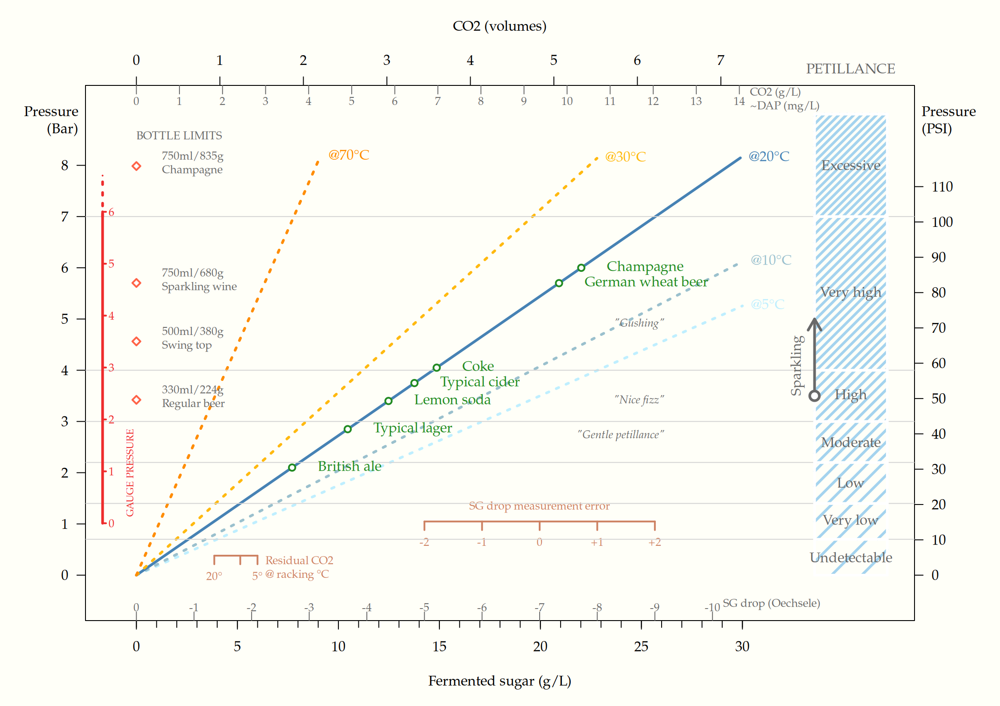

Appendix B — Figures
B.1 Carbonation
The figure below shows the effect of sugar, added at bottling, on bottle pressure and petillance.

Residual CO2 already dissolved in the cider from fermentation should be added to the estimate, along wih any fermentable sugar left in the must unless completely stabilized.
Example:
Racking from the fermentation vessel at 20 °C will result in residual CO2 corresponding to about 4 g/L sugar already present in the cider. If current SG is 1.001 (1 Oe) and final SG was estimated to 0.008, it means a potential SG drop of 0.003 (3 Oe), which corresponds to 8.5 g/L added sugar.
Summarized:
4 + 8.5 = 12.5 g sugar per litre
This “Pet Nat” gives a carbonation level slightly below a typical cider (~3.5 Bar at 10 °C serving temperature). If ~9 g/L sugar is added (resulting in a total of 12.5 + 9 = 21.5 g/L), the cider will be champagne-like in petillance (6 Bar at 20 °C).
One might also need to consider potential measurement error from the hydrometer, both regarding current SG and the final SG measured in a test bottle. This might give a quite large discrepancy, although the measurement error can be reduced by multiple and sequential measurements.
B.2 Figure with more temperature lines
B.3 Table with details
| sugar_gL | sg_drop | CO2_vol | P_bar_5C | P_bar_10C | P_bar_15C | P_bar_20C | P_bar_25C |
|---|---|---|---|---|---|---|---|
| 1 | -0.4 | 0.2 | 0.2 | 0.2 | 0.2 | 0.3 | 0.3 |
| 2 | -0.7 | 0.5 | 0.4 | 0.4 | 0.5 | 0.5 | 0.6 |
| 3 | -1.1 | 0.7 | 0.5 | 0.6 | 0.7 | 0.8 | 0.9 |
| 4 | -1.4 | 1.0 | 0.7 | 0.8 | 0.9 | 1.1 | 1.3 |
| 5 | -1.8 | 1.2 | 0.9 | 1.0 | 1.2 | 1.4 | 1.6 |
| 6 | -2.1 | 1.5 | 1.1 | 1.2 | 1.4 | 1.6 | 1.9 |
| 7 | -2.5 | 1.7 | 1.2 | 1.4 | 1.7 | 1.9 | 2.2 |
| 8 | -2.8 | 1.9 | 1.4 | 1.6 | 1.9 | 2.2 | 2.5 |
| 9 | -3.2 | 2.2 | 1.6 | 1.8 | 2.1 | 2.5 | 2.8 |
| 10 | -3.5 | 2.4 | 1.8 | 2.0 | 2.4 | 2.7 | 3.1 |
| 11 | -3.9 | 2.7 | 1.9 | 2.2 | 2.6 | 3.0 | 3.4 |
| 12 | -4.2 | 2.9 | 2.1 | 2.4 | 2.8 | 3.3 | 3.8 |
| 13 | -4.6 | 3.1 | 2.3 | 2.7 | 3.1 | 3.5 | 4.1 |
| 14 | -4.9 | 3.4 | 2.5 | 2.9 | 3.3 | 3.8 | 4.4 |
| 15 | -5.3 | 3.6 | 2.6 | 3.1 | 3.5 | 4.1 | 4.7 |
| 16 | -5.6 | 3.9 | 2.8 | 3.3 | 3.8 | 4.4 | 5.0 |
| 17 | -6.0 | 4.1 | 3.0 | 3.5 | 4.0 | 4.6 | 5.3 |
| 18 | -6.3 | 4.4 | 3.2 | 3.7 | 4.3 | 4.9 | 5.6 |
| 19 | -6.7 | 4.6 | 3.3 | 3.9 | 4.5 | 5.2 | 5.9 |
| 20 | -7.0 | 4.8 | 3.5 | 4.1 | 4.7 | 5.4 | 6.3 |
| 21 | -7.4 | 5.1 | 3.7 | 4.3 | 5.0 | 5.7 | 6.6 |
| 22 | -7.7 | 5.3 | 3.9 | 4.5 | 5.2 | 6.0 | 6.9 |
| 23 | -8.1 | 5.6 | 4.0 | 4.7 | 5.4 | 6.3 | 7.2 |
| 24 | -8.4 | 5.8 | 4.2 | 4.9 | 5.7 | 6.5 | 7.5 |
| 25 | -8.8 | 6.0 | 4.4 | 5.1 | 5.9 | 6.8 | 7.8 |
| 26 | -9.1 | 6.3 | 4.6 | 5.3 | 6.1 | 7.1 | 8.1 |
| 27 | -9.5 | 6.5 | 4.7 | 5.5 | 6.4 | 7.4 | 8.4 |
| 28 | -9.8 | 6.8 | 4.9 | 5.7 | 6.6 | 7.6 | 8.8 |
| 29 | -10.2 | 7.0 | 5.1 | 5.9 | 6.9 | 7.9 | 9.1 |
| 30 | -10.5 | 7.3 | 5.3 | 6.1 | 7.1 | 8.2 | 9.4 |
| sugar_gL | sg_drop | CO2_vol | P_bar_30C | P_bar_35C | P_bar_40C | P_bar_45C | P_bar_50C |
|---|---|---|---|---|---|---|---|
| 1 | -0.4 | 0.2 | 0.4 | 0.4 | 0.5 | 0.5 | 0.6 |
| 2 | -0.7 | 0.5 | 0.7 | 0.8 | 0.9 | 1.0 | 1.2 |
| 3 | -1.1 | 0.7 | 1.1 | 1.2 | 1.4 | 1.6 | 1.7 |
| 4 | -1.4 | 1.0 | 1.4 | 1.6 | 1.8 | 2.1 | 2.3 |
| 5 | -1.8 | 1.2 | 1.8 | 2.0 | 2.3 | 2.6 | 2.9 |
| 6 | -2.1 | 1.5 | 2.1 | 2.4 | 2.8 | 3.1 | 3.5 |
| 7 | -2.5 | 1.7 | 2.5 | 2.8 | 3.2 | 3.6 | 4.1 |
| 8 | -2.8 | 1.9 | 2.9 | 3.2 | 3.7 | 4.1 | 4.7 |
| 9 | -3.2 | 2.2 | 3.2 | 3.7 | 4.1 | 4.7 | 5.2 |
| 10 | -3.5 | 2.4 | 3.6 | 4.1 | 4.6 | 5.2 | 5.8 |
| 11 | -3.9 | 2.7 | 3.9 | 4.5 | 5.1 | 5.7 | 6.4 |
| 12 | -4.2 | 2.9 | 4.3 | 4.9 | 5.5 | 6.2 | 7.0 |
| 13 | -4.6 | 3.1 | 4.6 | 5.3 | 6.0 | 6.7 | 7.6 |
| 14 | -4.9 | 3.4 | 5.0 | 5.7 | 6.4 | 7.3 | 8.2 |
| 15 | -5.3 | 3.6 | 5.4 | 6.1 | 6.9 | 7.8 | 8.7 |
| 16 | -5.6 | 3.9 | 5.7 | 6.5 | 7.4 | 8.3 | 9.3 |
| 17 | -6.0 | 4.1 | 6.1 | 6.9 | 7.8 | 8.8 | 9.9 |
| 18 | -6.3 | 4.4 | 6.4 | 7.3 | 8.3 | 9.3 | 10.5 |
| 19 | -6.7 | 4.6 | 6.8 | 7.7 | 8.7 | 9.8 | 11.1 |
| 20 | -7.0 | 4.8 | 7.1 | 8.1 | 9.2 | 10.4 | 11.7 |
| 21 | -7.4 | 5.1 | 7.5 | 8.5 | 9.7 | 10.9 | 12.2 |
| 22 | -7.7 | 5.3 | 7.9 | 8.9 | 10.1 | 11.4 | 12.8 |
| 23 | -8.1 | 5.6 | 8.2 | 9.3 | 10.6 | 11.9 | 13.4 |
| 24 | -8.4 | 5.8 | 8.6 | 9.7 | 11.0 | 12.4 | 14.0 |
| 25 | -8.8 | 6.0 | 8.9 | 10.1 | 11.5 | 13.0 | 14.6 |
| 26 | -9.1 | 6.3 | 9.3 | 10.6 | 11.9 | 13.5 | 15.1 |
| 27 | -9.5 | 6.5 | 9.6 | 11.0 | 12.4 | 14.0 | 15.7 |
| 28 | -9.8 | 6.8 | 10.0 | 11.4 | 12.9 | 14.5 | 16.3 |
| 29 | -10.2 | 7.0 | 10.4 | 11.8 | 13.3 | 15.0 | 16.9 |
| 30 | -10.5 | 7.3 | 10.7 | 12.2 | 13.8 | 15.6 | 17.5 |
| sugar_gL | sg_drop | CO2_vol | P_bar_55C | P_bar_60C | P_bar_65C | P_bar_70C |
|---|---|---|---|---|---|---|
| 1 | -0.4 | 0.2 | 0.7 | 0.7 | 0.8 | 0.9 |
| 2 | -0.7 | 0.5 | 1.3 | 1.5 | 1.6 | 1.8 |
| 3 | -1.1 | 0.7 | 2.0 | 2.2 | 2.4 | 2.7 |
| 4 | -1.4 | 1.0 | 2.6 | 2.9 | 3.2 | 3.6 |
| 5 | -1.8 | 1.2 | 3.3 | 3.6 | 4.0 | 4.5 |
| 6 | -2.1 | 1.5 | 3.9 | 4.4 | 4.9 | 5.4 |
| 7 | -2.5 | 1.7 | 4.6 | 5.1 | 5.7 | 6.3 |
| 8 | -2.8 | 1.9 | 5.2 | 5.8 | 6.5 | 7.2 |
| 9 | -3.2 | 2.2 | 5.9 | 6.6 | 7.3 | 8.1 |
| 10 | -3.5 | 2.4 | 6.5 | 7.3 | 8.1 | 9.0 |
| 11 | -3.9 | 2.7 | 7.2 | 8.0 | 8.9 | 9.9 |
| 12 | -4.2 | 2.9 | 7.8 | 8.7 | 9.7 | 10.8 |
| 13 | -4.6 | 3.1 | 8.5 | 9.5 | 10.5 | 11.7 |
| 14 | -4.9 | 3.4 | 9.1 | 10.2 | 11.3 | 12.6 |
| 15 | -5.3 | 3.6 | 9.8 | 10.9 | 12.1 | 13.5 |
| 16 | -5.6 | 3.9 | 10.4 | 11.6 | 13.0 | 14.4 |
| 17 | -6.0 | 4.1 | 11.1 | 12.4 | 13.8 | 15.3 |
| 18 | -6.3 | 4.4 | 11.7 | 13.1 | 14.6 | 16.2 |
| 19 | -6.7 | 4.6 | 12.4 | 13.8 | 15.4 | 17.1 |
| 20 | -7.0 | 4.8 | 13.0 | 14.6 | 16.2 | 18.0 |
| 21 | -7.4 | 5.1 | 13.7 | 15.3 | 17.0 | 18.9 |
| 22 | -7.7 | 5.3 | 14.4 | 16.0 | 17.8 | 19.8 |
| 23 | -8.1 | 5.6 | 15.0 | 16.7 | 18.6 | 20.7 |
| 24 | -8.4 | 5.8 | 15.7 | 17.5 | 19.4 | 21.6 |
| 25 | -8.8 | 6.0 | 16.3 | 18.2 | 20.2 | 22.5 |
| 26 | -9.1 | 6.3 | 17.0 | 18.9 | 21.1 | 23.4 |
| 27 | -9.5 | 6.5 | 17.6 | 19.7 | 21.9 | 24.2 |
| 28 | -9.8 | 6.8 | 18.3 | 20.4 | 22.7 | 25.1 |
| 29 | -10.2 | 7.0 | 18.9 | 21.1 | 23.5 | 26.0 |
| 30 | -10.5 | 7.3 | 19.6 | 21.8 | 24.3 | 26.9 |
B.4 Details on method for figure and table
The assumptions and formulas below were used to compute data for the plot. Essentially:
- Molar concentration of CO2 was calculated from added sugar.
CO2_M = ( concentration of sugar / molar mass of sugar ) * 2 * efficiency of fermentation (~0.96) [1]
- A temperature dependent Henrys constant (kHT) was calculated.
kHT = ( kH * exp( 2400 * (1/T - 1/T_ref) ) )
- Resulting pressure was derived.
Pressure (bar) = CO2_M/kHT
R code for main CO2 estimation function
ferment <- function(x=10, input=“sugar_gL”, temp=20, F=NULL, atm=NULL, ambient_CO2=0.105){ ## Calculate effect of fermentation of glucose (CO2 produced, pressure, etc) ## Can also be used in reverse fashion to calculate eg sugar utilized to produce a certain amount of CO2.
## Input variables -------------
## x is value of the "input" variable (eg 10 g/L sugar_gL)
## "input" can be one of these: "CO2_gL", "sugar_gL", "P_bar", "P_psi", "CO2_vol", "sg_drop"
## temp is temperature in celsius.
## F is temp in Fahrenheit and will override temp.
## atm != NULL will use 1 atmosphere för STP.
## ambient_CO2 is used for calculating reidual CO2 left from fermentation.
## In air CO2 concentration is 0.04 % (400 ppm).
## If 12% of the 20% oxygen in air is replaced by CO2 in headspace (ie the assumed state before removing airlock), you might set the value to 12 (%).
## A value of only 0.105 seems to give results in accordance with empirical data.
## atm : If set to 1, one atmosphere was used for standard pressure instead of 1 bar. Densities for CO2, sugar and ethanol may therefore be slightly off. TODO: Use densities at 1 atm instead if this option is used.
## Convert input to SI units:
if(is.null(F)){
C <- temp
}else{
C <- 5/9*(F-32) ## Fahrenheit to celsius
temp <- C
message("Note: F value used for temperature and the value of 'temp' is ignored.\n")
}
T = temp+273.15 # Kelvin from celsius
## Assumptions --------
## Values (for eg density) are under the condition of standard temperature and pressure (STP).
## STP is variably defined as 273 K (0° Celsius or 32° Fahrenheit) and 1 atm pressure, or else at 1 Bar (100 kPa). The latter pressure is recommended after 1982 but not always implemented.
## The molar volume of gas at 1 atm is 22.4 L (22.7 L if 1 Bar is used).
## Here, 1 Bar is used for STP.
## The density of any gas can be estimated by the given equation, density at STP = molar mass (1 mol / 22.4 L)
## Note that the "reference temperature" for Henrys Law constant is 298.15 Kelvin, not STP.
gas_molar_volume = 22.7 # (L)
T_stp = 273.15 ## Temperature at STP (Kelvin)
P_stp = 100000 ## Ambient pressure at STP (Pa) ## 1 Atm = 101325 Pa
if(!is.null(atm)){
P_stp=101325
gas_molar_volume = 22.4
message("Note: One atmosphere was used for standard pressure. Densities for CO2, sugar and ethanol may therefore be slightly off.\n")
}
## Constants
kB = 1.38*10^-23 ## Boltzmann constant (J/K)
kA = 6.02214076*10^23 ## Avogadros constant (N molecules per mol)
R = kB*kA ## Universal gas constant
## Values for efficiency of fermentating CO2 from sugar:
## Note: These are empirical, given as a proportion.
e_CO2 = 0.96 ## Ie 0.47 g/L CO2 from from 1 g/L sugar [@Simmens2018]
e_ethanol = 0.94 ## Ie 0.48 g/L ethanol from from 1 g/L sugar [@Simmens2018]
## Volume ethanol from 1g sugar: 16.83 is average, and coef can vary 16.5-17.2 depending on yeast.
## Molar masses (g/mol):
m_CO2 = 44.01
m_sugar = 180.156 ## Glucose
m_ethanol = 46.068
m_water = 18.01528
## => CO2_M (mol/L) = CO2_gL / m_CO2
## Desities at STP (g/L):
d_CO2 = 1.951*10^3 ## 1.977 is density of CO2 (g/L) at 0C 1 Atm. Also 1.964??
d_ethanol = 0.8067*10^3
d_water = 1*10^3 ## Pure water goes to ice at STP and has density = 1g/cm^3 @4°C; 0.9982 @20°C => Using 1g here.
d_sugar = 1.58*10^3 ## Table sugar has 1.58 g/cm^3 (1.54 for glucose)
## Eg: m_CO2/d_CO2 ## Volume of 1 mol CO2 (Litres).
## Note: kg/m^3 = g/L
## Sugar to Oechsele:
## Oechsle (deg Oe): mass must - mass water (grams) @20°C. 1 Oe = 1 g difference.
## Table sugar has d = 1.58 g/cm^3 (1.54 for glucose)
## If x grams of sugar is added to water, the mass will increase by x g and the volume by x/d_sugar L, which has to be added to the volume (and mass) of the water comparison
## To get g sugar needed for 1 Oe, Solve x for 1 Oe in 1 = x - x/1.58:
## 1 = x - x/1.58 => 1/x = 1 - 1/1.58 => 1/x = 0.3670886 => x = 2.724138 grams sugar per Oe
## Using d gives = 1.54: x = 1/(1 - 1/1.54) ## 2.851852
kO = 1/(1 - d_water/d_sugar) ## coefficient for converting sugar to Oechsele (g sugar/Oe)
## sugar_gL/kO = Oe
## Enthalpy of solution and Henrys Law:
## The enthalpy change for the dissolution of carbon dioxide (CO2) in water at 20 °C and 1 atm is approximately −19 kJ/mol. This is assumed to be approximately valid for the relevant temperature range. [Enthalpy of dissolution] / R = 2400 for CO2 in water.## See also: https://chem.libretexts.org/Bookshelves/Physical_and_Theoretical_Chemistry_Textbook_Maps/Supplemental_Modules_(Physical_and_Theoretical_Chemistry)/Physical_Properties_of_Matter/Solutions_and_Mixtures/Solution_Basics/Enthalpy_of_Solution ## Henrys law wiki: https://en.wikipedia.org/wiki/Henry%27s_law ## Formulas from Carbonation table: www.cider.org.uk/carbonation_table.xls ## Those are Validated aginst Sc against Schweppes table up to 30C ed = 19945.33/R # Enthalpy of dissolution for CO2 in water (J/mol) at 298.15 K ## TODO: Derive ed: https://webbook.nist.gov/cgi/cbook.cgi?ID=C124389&Mask=10 T_ref=298.15 # Reference temparature for Henry’s law constant kH=3.4110^-4 # Henry’s law constant for solubility in water (mol/m^3 Pa) at reference temperature (298.15 K). Unit = mol m^-3 * Pa^-1. [2] kH = kHP_stp # kH At Standard Pressure ## Select an option: ## kH(P_stp/1000) mol/L at P_stp? ## kH = 1.0030110^−3 # mol/kgPa kH = kH/1000 ## mol per >>dm^3<< * Pa ## kH = kH101.325 ## mol/(Latm) ## kH = 29.4 barM^-1 ## Note: Henrys volatilty constant KH?
## Values for Henry’s law constants are: ## … expressed in units of atmospheres for air to moles per cubic meter for water (atm-m3/mol) ## … or in a dimensionless unit described as KH′ = KH/(RT) ## … where KH′ is the dimensionless Henry’s law constant, KH is the Henry’s law constant (atm-m3/mol), R is the ideal gas constant (8.20575 × 10−5 atm-m3/mol-K) and T is the water temperature (K). ## ? Henry’s law constant for CO2 in water is 1.6710^8 Pa at 298K ? ## Values for kH (from wikipedia): ## kH = 0.034 # mol/(Latm) ## kH = 29.4 # ((Latm)/mol) ## kH = 1600 # atm ## kH = 0.83 # dimensionless ## Conversion factors and values för kH: https://acp.copernicus.org/articles/15/4399/2015/acp-15-4399-2015.pdf ## kH0.0409970 # From dimensionless to mol/L atm ## 4.0460910^-7 # From dimensionless to mol/kg Pa ## mol/kgAtm to mol/kgPa = 9.8692310^−6 ## kH = 3.410^-4 mol/(m3Pa) ## 3.410-41.0030110^-3 ## mol/(m^3Pa) to mol/kg*Pa ## From google: ## Henry’s law constant for CO2 in water is 1.67×108Pa at 298K ## The molar solubility of carbon dioxide gas is 0.07483 M in water at 25C ## Solubility in water. 1.45 g/L at 25 °C (77 °F), 100 kPa (0.99 atm) ## For CO₂ at 0°C, kH is approximately 0.077 mol/(L·atm). ## Chat GPT: “0.077mol/(Latm)” ## Chat GPT : ”For CO2CO2 in water at 25°C, kH is approximately 3.3×10^−4 mol/(kgPa)”
## Unit conversion factors:
## 1 atm = 1.01325 bar = 1.01325*10^5 Pa
## 1 bar = 1*10^5 Pa = 0.9869233 atm
## 1 bar = 14.503774 psi
## Is this right ? 1 volume CO2 = 1.964 g/L CO2 at 0°C ??
## Assumptions on fermentation efficiency:
## In theory 1 mol glucose gives 2 M CO2 and 2M ethanol.
## However, efficacy is not 100%.
## Conversion rate is highly yeast dependent and can vary from 16.5-17.2 g/L (average 16.4 g/L; max 17.98) sugar for 1% alcohol
## See https://www.awri.com.au/wp-content/uploads/2018/04/s1809.pdf
## df <- data.frame(
## mol = c(1, 2, 2),
## weight = c(glucose=m_glucose*1, co2=m_CO2*2, ethanol=m_ethanol*2),
## )
## df$prop = df$weight/m_glucose
## df$efficacy = c(1, 0.47, 0.48)/df$prop ## [@Simmens2018]
## df$result_weight = df$prop*df$efficacy ## Output w/w of glucose
## Alcohol, see: https://www.awri.com.au/wp-content/uploads/2018/04/s1809.pdf
## See: https://byo.com/article/master-the-action-carbonation/
## Notes ---------------------
## CO2_vol (volumes) = CO2_gL * 1/1.964
## CO2_vol = CO2_M * 44 * 0.51 => = CO2_M * 22.44
## 1 volume CO2 = CO2 1.964 g/L
## Kh=0.034*exp(2400*((1/T)-(1/298))) ## vanhoff(T)
## alc (% v/v) = sugar_gL/16.83 # 16.83 is average, Coef can vary 16.5-17.2 depending on yeast
## 1 CO2 volume is the space that the CO2 would take up at STP
## Temperature dependent CO2 volumes (not used):
## if(input=="CO2_vol"){CO2_M = CO2_vol/gas_molar_volume} ## At 0C
## if(input=="CO2_vol"){CO2_M = CO2_vol/mass_volumes(m_CO2, temp)} ## At temp
## Volumes of CO2 at temp calculated using Ideal gas law (P*V = n*k*T)
## Eg: => n = V*P/(kB*T) => n = d_CO2/m_CO2*kA ## Number of molecules (Moles) in 1 L gas; n = m/m_CO2*kA n for mass m of CO2
## CO2_vol = ((CO2_M*kB*T)/P )/0.001 ## Volume (L); (1L = 0.001 m^3);## temperature correction of SG (is this needed? Hydrometar calibrated probably at 20C): ## https://www.topdownbrew.com/SGCorrection.html ## F to C (32°F − 32) × 5/9 = 0°C ; (0°C × 9/5) + 32 = 32°F ## F = (temp9/5)+32 ## (temp-32) 5/8 ## correction = (1.313454 - 0.132674F + 2.057793e-3F^2 - 2.627634e-6*F^3)/1000 ## SG + correction = corrected sg
## Calculations ------------
## Calculate temperature dependent equilibrium constant for CO2 in water (kHT)
kHT = ( kH * exp(ed * (1/T - 1/T_ref) ) )
## Or using helper: kHT = vanhoff(temp)
## Dissolved CO2 at T=temp and P=standard pressure:
## Formula: Sg = kHT*Pg where Sg is gas solubility, kH is Henry's Law constant and Pg is partial pressure of the gaseous solute.
## The inverse of the Molar Henry's law constant, multiplied by the partial pressure of the gas above the solution, is the molar solubility of the gas.
## Molar solubility, Sp (the number of moles of the solute that dissolves to form a liter of saturated solution)
## Sg = kHT*P_stp ## moles per kg water?
## Sp = 1/kHT * P_stp
## CO2_eq_gL = Sp/m_CO2
## Calculate residual CO2 from fermentation before adding sugar:
## Henrys law: C=kH*P; C is concentration (solubility in mol/kg water); kH is in mol/(kg*Pa); P is partial pressure of CO2 in air (Pa)
## The mole fraction of CO2 at STP in air is 400 ppm or 0.04%
ambient_CO2 <- ifelse(is.null(ambient_CO2), 0.04/100, ambient_CO2/100)
P_co2_air = ambient_CO2*P_stp # Partial pressure of CO2 in air/headspace (Pa)
C_co2_water=P_co2_air * kHT * 1000/P_stp ## ? Solubility (C) in mol/volume. kHT*1000/P_stp is needed to get correct results since kHT was at standard pressure and per dm^3 ?
residual_M <- C_co2_water
residual_gL <- C_co2_water*m_CO2 ## Dissolved CO2 in g/m^3
residual_vol <- C_co2_water*gas_molar_volume # volumes
residual_Bar = residual_M/kHT ## Not meaningful, kHT is cancelled out, but should be = pressure at STP (=1)?B.5 Note:
## The level of CO2 dissolved in beer after normal fermentation is between 1.2 and 1.7 volumes, depending on the temperature
## The partial pressure of headspace gas, especially H2 and CO2 has significant effect on the homoacetogenesis reaction. Theoretical calculation showed that when P_H2 and P_CO2 were 40 kPa and 60 kPa, respectively, the homoacetogenesis reaction was the strongest.
## Dry atmospheric air contains 78.1% nitrogen (N2) and 20.95% oxygen (O2) by volume. CO2 is 0.04%. It follows that 78.1% of the atmospheric pressure can be attributed to the partial pressure of N2 and 20.95% to the partial pressure of O2.
## At STP, the partial pressure of CO2 in air is approximately 0.0004 (or 400 ppm) of the total atmospheric pressure. With atmospheric pressure at STP being 1.013×105 Pa, the partial pressure of CO2 can be calculated as: P=0.0004×1.013×105=40.52 Pa
## Using Henry's law, the solubility of CO2 in water is: C=kH⋅P=(3.3×10−4)⋅(40.52) => C≈1.337×10−2mol/kg at STP
## At pH 3.5, most of the CO2 remains in the dissolved form, and the solubility calculated above (0.0134 mol/kg) is close to the effective concentration of CO2 in the solution (ie pH has little effect on the calculations in the relevant range 3-4).
## Chat GPT, residual CO2 (Henrys Law), and/or empirical:
chat_CO2_vol = 82.146226 - 0.5295273*T + 0.000861402 * T^2
## Note: This does not take headspace concentration of CO2 into account. "These constants were derived from experimental data on the solubility of CO₂ in beer across a range of temperatures commonly encountered during fermentation and storage. Since beer fermentation typically occurs at temperatures between 60°F and 70°F (15°C to 21°C), the constants are calibrated to reflect the relationship between temperature and CO₂ solubility in this range specifically."
## Note: Setting ambient_CO2=0.105 gives very similar results.
## Assign value x to an input variable:
assign(input, unname(x))
## Calculate CO2_M (Moles/L) from input:
if(input=="sugar_gL"){CO2_M = (sugar_gL/m_sugar)*2*e_CO2}
## if(input=="sg_drop"){CO2_M = sg_drop*kO*e_CO2/m_CO2}
if(input=="sg_drop"){CO2_M = (sg_drop*kO/m_sugar)*2*e_CO2}
if(input=="P_bar"){CO2_M = P_bar*kHT} ## Adjusted for temp via kHT
if(input=="P_psi"){CO2_M = (P_psi/14.503774)*kHT}
if(input=="CO2_gL"){CO2_M = CO2_gL/m_CO2}
if(input=="CO2_vol"){CO2_M = CO2_vol/gas_molar_volume} ## At STP
## Derive the other variables:
CO2_gL = CO2_M*m_CO2
CO2_vol = CO2_M*gas_molar_volume # In volumes CO2 at 0C
P_bar = CO2_M/kHT
P_gauge = P_bar-1
P_psi = CO2_M/kHT*14.503774 # P_psi = P_bar*14.503774
sg_drop = CO2_M/(2*e_CO2*kO)*m_sugar # In Oechsele
sugar_gL = CO2_M*m_sugar/(2*e_CO2)
alc_prc = sugar_gL/m_sugar*2*e_ethanol*m_ethanol/d_ethanol ## % (v/v)
F = (temp * 9/5) + 32 ## Fahrenheit
## x <- ifelse(from_sugar, 0.47*x, x) ## calculate CO2 from sugar g/L
## CO2_gL <- ifelse(input=="P_bar", x*1.964, x) ## 1 volume CO2 = CO2 1.96 g/L
## CO2_vol <- ifelse(input=="P_bar", x, x/1.964)
## CO2_M = CO2_gL/44 # Mol/L
## output (rounded):
round(c(P_gauge=P_gauge, P_bar=P_bar, P_psi=P_psi, CO2_gL=CO2_gL, CO2_M=CO2_M, CO2_vol=CO2_vol, sugar_gL=sugar_gL, sg_drop=sg_drop, alc_prc=alc_prc, C=C, F=F, residual_M=residual_M, residual_gL=residual_gL, residual_Bar=residual_Bar, residual_vol=residual_vol, chat_CO2_vol=chat_CO2_vol, kHT=kHT, input_value=unname(x)), digits=4)